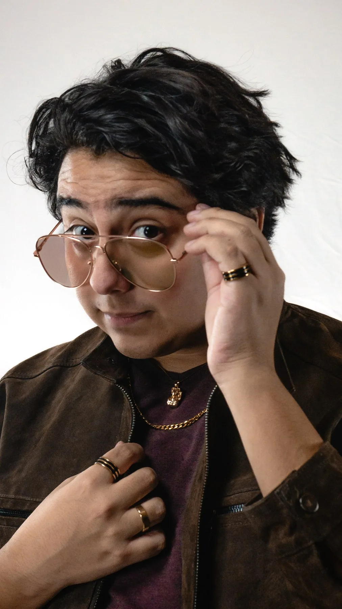
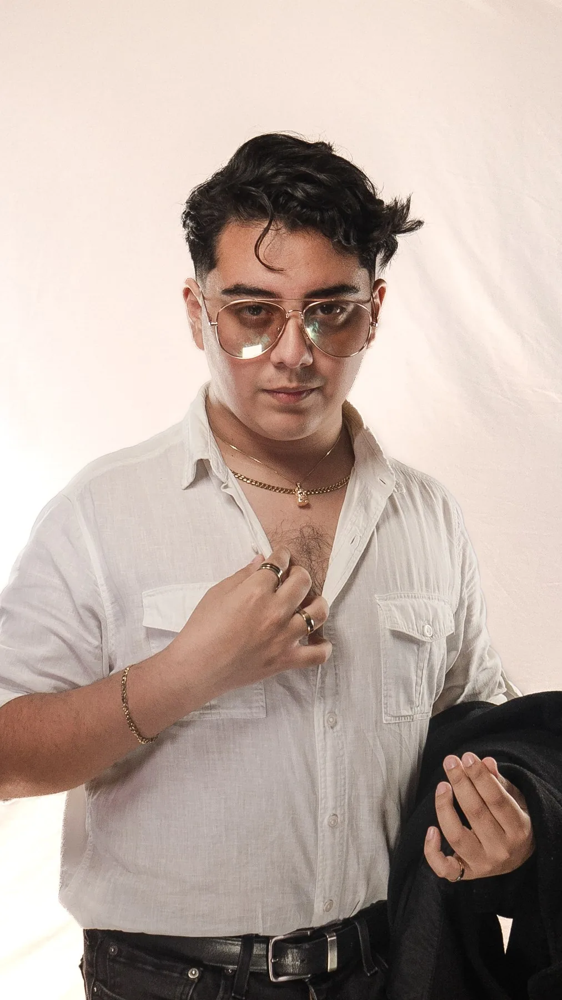

100%
Photography from someone who treats every shoot like the one you'll still be showing people years from now.

I'm a portrait and editorial photographer working across studio and natural light, drawn to quiet gestures more than posed perfection. Every session opens with time spent simply talking — about the light you love, the mood you're after, the version of yourself you want kept.
From golden-hour warmth to the hush of a studio backdrop, the goal is always the same: images that feel like you, years from now.
Want to know more about me?Every frame from every set, with no particular order to it. Keep scrolling for as long as you like.
The story behind this session hasn't been written yet — a longer note on the light, the location, and the day itself will live here soon.
—
Fill out the form and I'll follow up to lock in the details.
Thanks for reaching out — I'll get back to you shortly to confirm the details.

Follow Along
New shoots, behind-the-scenes, and the occasional bad pun — all live on socials.